|
4-4-2
|
Germany | 1 | - | 1 | Paraguay |
4-4-2
|
| HT 0-1 Pens. 3-4 | ||||||
|
FIFA World CupMonday 29 June 2026
|
||||||
- Venue
- Boston Stadium
- Attendance
- 63,945
- Referee
- Jalal Jayed
Substitution46'
F. Nmecha
L. Goretzka
Goal54'
K. Havertz
Assist: F. Wirtz
Substitution63'
D. Undav
J. Musiala
Substitution79'
A. Pavlović
W. Anton
Substitution88'
L. Sané
N. Woltemade
Yellow card105+1'
Julian Nagelsmann
Yellow card106'
K. Havertz
- 2
Substitution110'
F. Wirtz
N. Amiri
A. Rüdiger
M. Thiaw
Yellow card115'
J. Musiala
Missed penalty122'
K. Havertz
Penalty scored125'
J. Kimmich
Penalty scored126'
J. Musiala
Missed penalty128'
N. Woltemade
Penalty scored130'
N. Amiri
Missed penalty132'
J. Tah
Whistle45+6'
45+6'
Whistle90+6'
90+6'
Whistle105+1'
105+1'
Whistle120+2'
120+2'
Goal42'
J. Enciso
Assist: M. Galarza
Substitution55'
G. Ávalos
G. Caballero
Substitution57'
J. Enciso
Mauricio
Yellow card65'
A. Cubas
Substitution90'
M. Almirón
G. Velázquez
- 2
Substitution99'
J. Cáceres
B. Ojeda
D. Bobadilla
A. Sanabria
Yellow card105'
Gustavo Julio Alfaro
Yellow card117'
M. Galarza
Substitution120+2'
J. Alonso
F. Balbuena
Penalty scored124'
Mauricio
Penalty scored125'
G. Gómez
Penalty scored127'
M. Galarza
Missed penalty129'
A. Sanabria
Missed penalty131'
F. Balbuena
Penalty scored132'
J. Canale
Germany | |
|---|---|
Goalkeeper | |
| 1 | M. Neuer |
Defender | |
| 2 | A. Rüdiger 110' |
| 4 | J. Tah |
| 6 | J. Kimmich |
| 18 | N. Brown |
Midfielder | |
| 5 | A. Pavlović 79' |
| 17 | F. Wirtz 110' |
| 19 | L. Sané 88' |
| 23 | F. Nmecha 46' |
Forward | |
| 7 | K. Havertz 54'106' |
| 26 | D. Undav 63' |
Substitutes | |
| 3 | W. Anton 79' |
| 8 | L. Goretzka 46' |
| 10 | J. Musiala 63'115' |
| 11 | N. Woltemade 88' |
| 20 | N. Amiri 110' |
| 24 | M. Thiaw 110' |
Paraguay | |
Goalkeeper | |
| 12 | O. Gill |
Defender | |
| 4 | J. Cáceres 99' |
| 6 | J. Alonso 120+2' |
| 13 | J. Canale |
| 15 | G. Gómez |
Midfielder | |
| 10 | M. Almirón 90' |
| 14 | A. Cubas 65' |
| 16 | D. Bobadilla 99' |
| 23 | M. Galarza 117' |
Forward | |
| 19 | J. Enciso 42'57' |
| 21 | G. Ávalos 55' |
Substitutes | |
| 2 | G. Velázquez 90' |
| 5 | F. Balbuena 120+2' |
| 9 | A. Sanabria 99' |
| 11 | Mauricio 57' |
| 20 | B. Ojeda 99' |
| 24 | G. Caballero 55' |


124'
Germany have attempted 805 passes in this game, the highest total by any team in a single match in the 2026 FIFA World Cup.
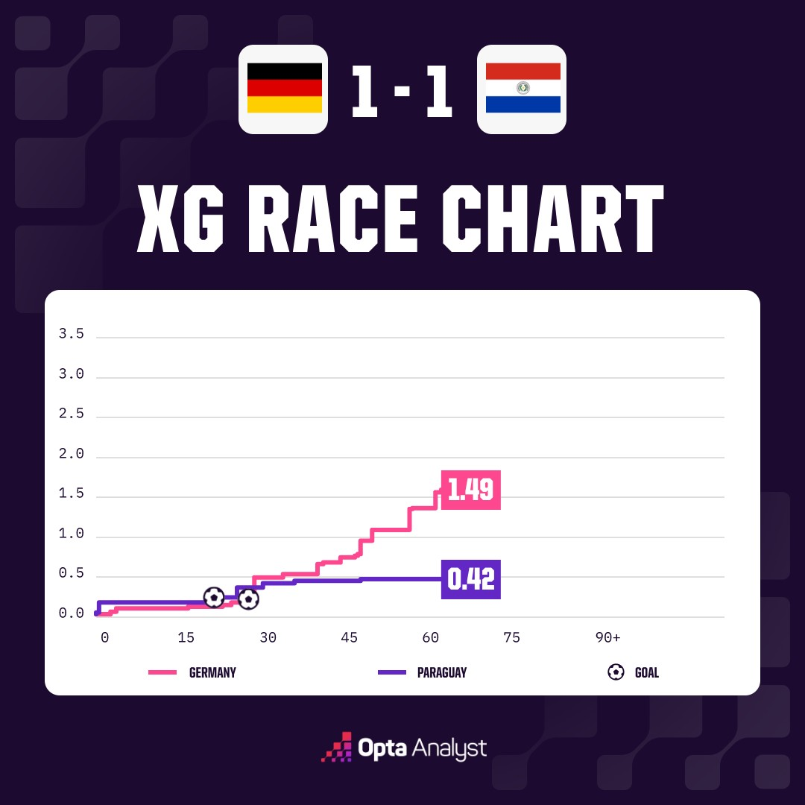
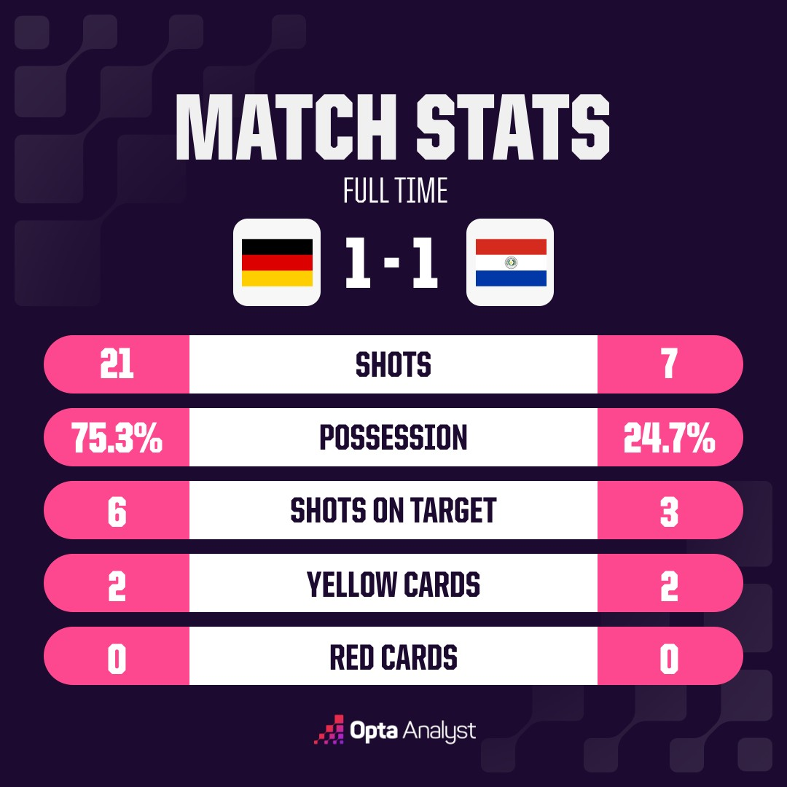
124'
Paraguay are undefeated in their last 3 games in the FIFA World Cup, their last longer unbeaten streak was from 20th June 2006 to 29th June 2010, a run of 5 games.
132'
WHAT A MOMENT FOR José Canale! They have held their nerve at the vital moment and sealed the victory for Paraguay, who have seen off Germany 4-3 in the penalty shoot-out. It was a calm spot-kick indeed from José Canale, and the celebrations can now begin.
132'
MISSED PENALTY! No luck for Jonathan Tah, who cannot find the back of the net from 12 yards – the nerves got to them and it is now Germany 3-3 Paraguay in the shoot-out.
131'
SAVE! What a great moment for Manuel Neuer, who denies Fabián Balbuena in the shoot-out! Could that be a crucial moment in deciding the outcome of this match?
130'
Nadiem Amiri makes no mistake, keeping their composure to coolly beat the goalkeeper. It is Germany 3-3 Paraguay in the shoot-out.
129'
IT IS MISSED! Antonio Sanabria cannot keep their composure and they fail to put their penalty away. The score in the shoot-out is Paraguay 3-2 Germany.
128'
PENALTY SAVED! That could be a pivotal moment in this penalty shoot-out! Nick Woltemade steps up from 12 yards and gets their attempt on target, but goalkeeper Orlando Gill denies them. So, the scoreline remains Germany 2-3 Paraguay!
127'
GOAL! Plenty of pressure on Matías Galarza, but they hold their nerve to get the better of the goalkeeper and make it Paraguay 3-2 Germany.
126'
GOAL! Plenty of pressure on Jamal Musiala, but they hold their nerve to get the better of the goalkeeper and make it Germany 2-2 Paraguay.
125'
GOAL! Plenty of pressure on Gustavo Gómez, but they hold their nerve to get the better of the goalkeeper and make it Paraguay 2-1 Germany.
125'
GOAL! Joshua Kimmich scores! There is a lot of tension, but the penalty is converted and the shoot-out score is now Germany 1-1 Paraguay.
124'
A successful penalty from Mauricio, and it is now Paraguay 1-0 Germany in the shoot-out. There was plenty of pressure on that one.
122'
HUGE STOP! Great goalkeeping from Orlando Gill, who keeps out Kai Havertz's spot-kick! What a boost for Paraguay! It is Germany 0-0 Paraguay.
123'
It has been 30 minutes since Paraguay last attempted a shot in this game.
122'
The Paraguay manager is looking to the substitutes’ bench, bringing on Fabián Balbuena in place of Júnior Alonso. Will the change make a difference? Let’s find out!
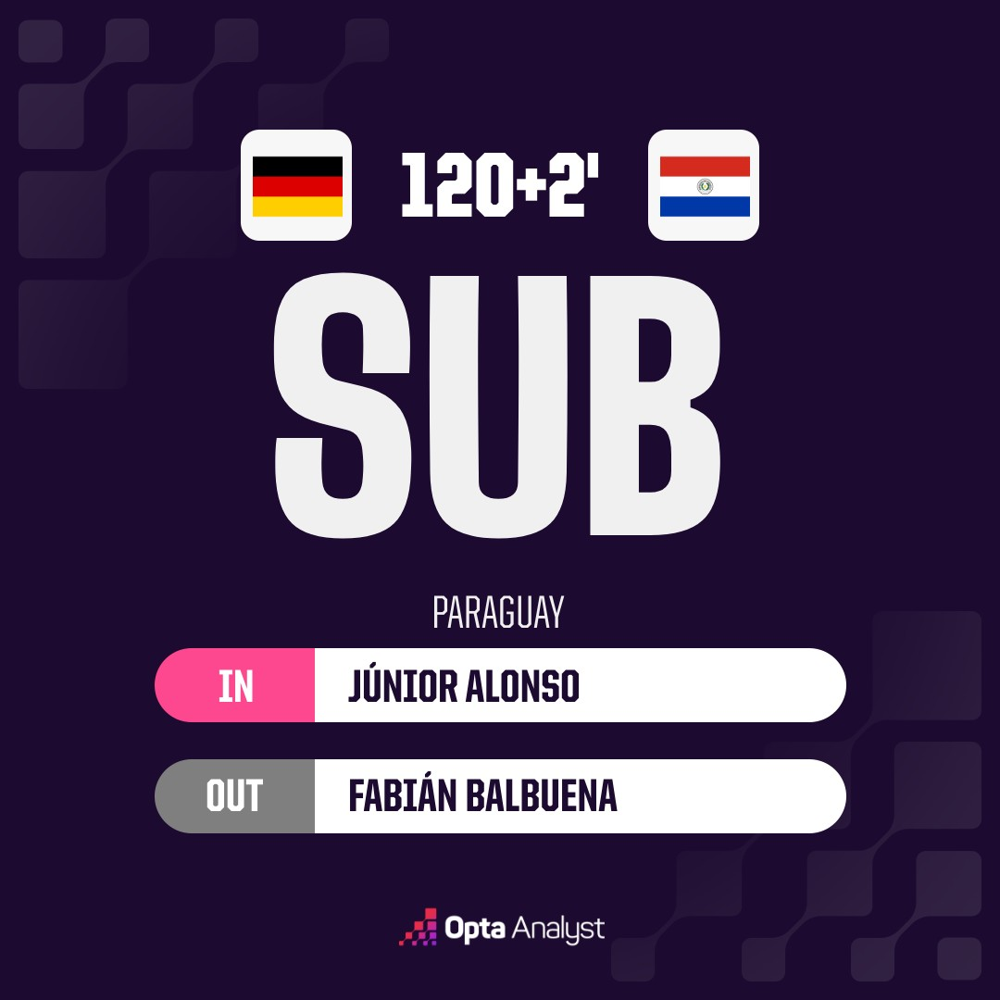
121'
A chance goes begging as Nadiem Amiri gets off a shot that does not hit the target. They might have done better with that one, but instead it is a goal-kick to Paraguay.
120'
Good play from Kai Havertz, who draws a foul from Matías Galarza to hand Germany a free-kick in a dangerous position. Will they create something from this set-piece?
119'
Germany have attempted the last 6 shots in this game, Paraguay last shot was taken by Miguel Almirón in the 93rd minute.
119'
WHAT A MISS! Oh dear, oh dear, that is an awful attempt from Waldemar Anton, as a huge chance for Germany to score the goal they need goes begging. What a let off for Paraguay, though. They will have to defend better than that from here on out!
118'
Corner! The ball goes behind and now Germany will aim to deliver a good ball into the penalty area and test that Paraguay defence, which has been frustrating them in recent minutes.
117'
That is a booking for Matías Galarza, who has received their first yellow card. They are not happy with the decision, but it is done now, and they will have to be careful for the rest of this game.
117'
A free-kick to Germany, as Matías Galarza goes in and fouls Jamal Musiala. However, Paraguay will not mind giving one away in this area too much, with plenty of distance to their goal.
115'
A yellow card for Germany's Jamal Musiala. They will have to walk a tightrope for the rest of this match, and Paraguay will likely look to target them and draw a second bookable offence.
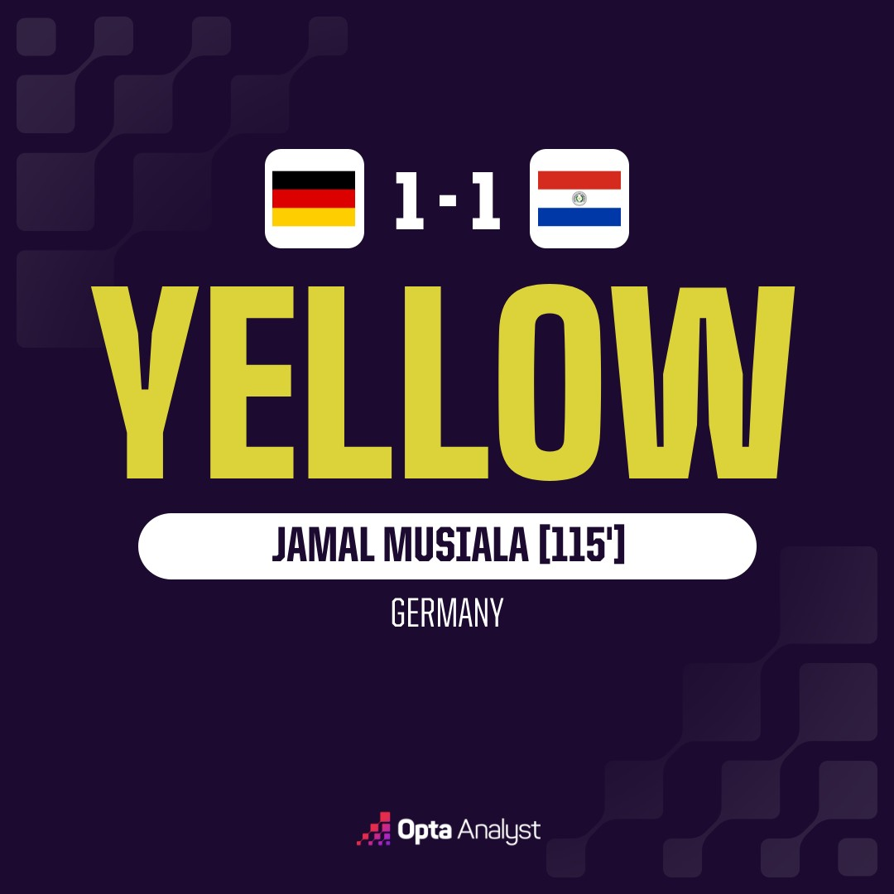
115'
A foul from Jamal Musiala on Matías Galarza sees Paraguay win a free-kick, but it is not in a dangerous position, so Germany should be confident they can defend it easily enough.
113'
Foul! A free-kick now in a dangerous area for Germany, after Jamal Musiala is fouled by Júnior Alonso. Can Germany make the most of this opportunity?
111'
Orlando Gill has made 6 saves, his highest total in a single match in the FIFA World Cup.
111'
Joshua Kimmich has attempted 5 shots, his highest total in a single match in the FIFA World Cup.
111'
Joshua Kimmich's effort is deflected out for a corner. Can Germany make anything of this set-piece?
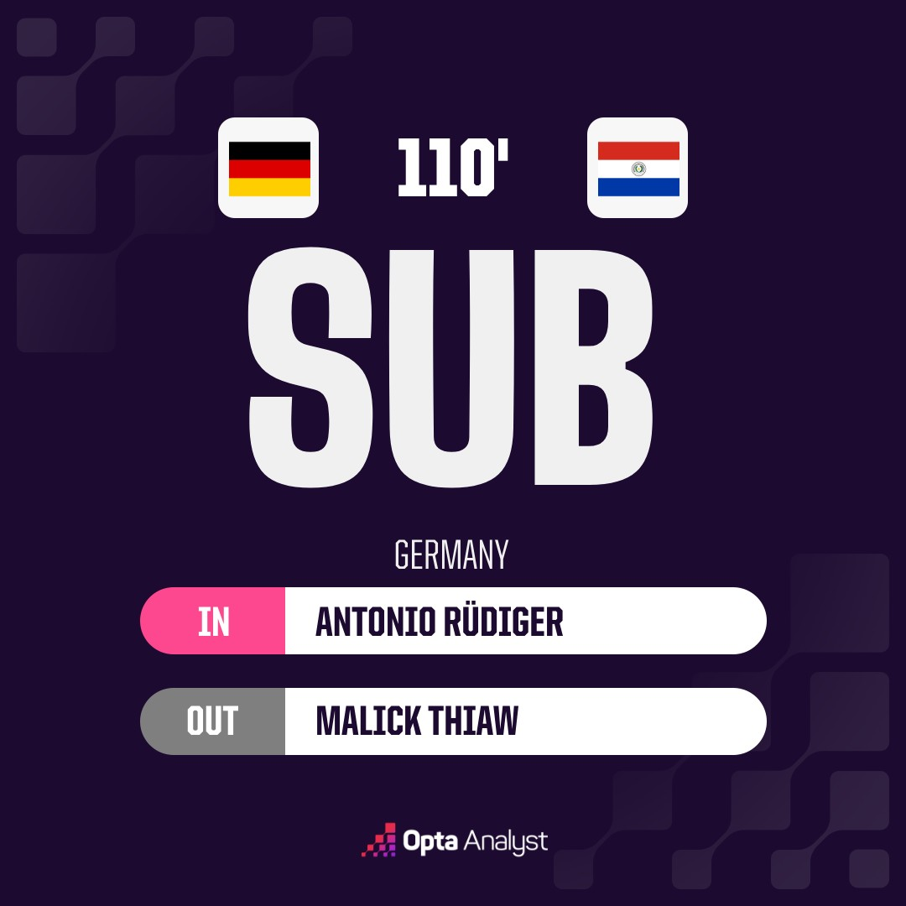
110'
Antonio Rüdiger’s match is over as Germany decide to make a substitution. Malick Thiaw enters the field in what looks like a tactical change.
110'
Germany are making a tactical change. Florian Wirtz is leaving the field and in their place comes Nadiem Amiri – we will soon see if this switch has the desired impact.
107'
The pressure is starting to build. Paraguay with a cluster of set-pieces as they look to make it count.
107'
Can Germany survive here? They will have some defending to do after the ball is turned behind for a corner kick. Will Paraguay take this opportunity and grab the goal they have been pushing for?
107'
This could be a chance for Paraguay, after Antonio Rüdiger fouls Antonio Sanabria, handing them a free-kick in a threatening area. A good set-piece from here could really test the Germany defense!
106'
That is a booking for Kai Havertz, who has received their first yellow card. They are not happy with the decision, but it is done now, and they will have to be careful for the rest of this game.
106'
Free-kick! A foul from Kai Havertz on José Canale. It is well away from Germany’s goal, so it is unlikely to result in a chance for Paraguay.
110'
Orlando Gill has made 5 saves, the first time he has made at least 5 saves in a match in the FIFA World Cup since facing Australia on 26th June 2026 (5 saves).
110'
SHOT! Kai Havertz manages to get a shot off from inside the area, but although it was heading in, they cannot get enough on it to beat Orlando Gill, who makes the save.
109'
A free-kick in a dangerous position now for Germany, after a foul from Mauricio on Waldemar Anton. Can Germany make Paraguay pay for that rashness from Mauricio?
108'
A lull in this match, as the teams prob and probe, but without much success. It has been 10 minutes since there was an attempt from either side, though Germany are seeing more of the ball, with 70 per cent possession to Paraguay’s 30 per cent during that time.
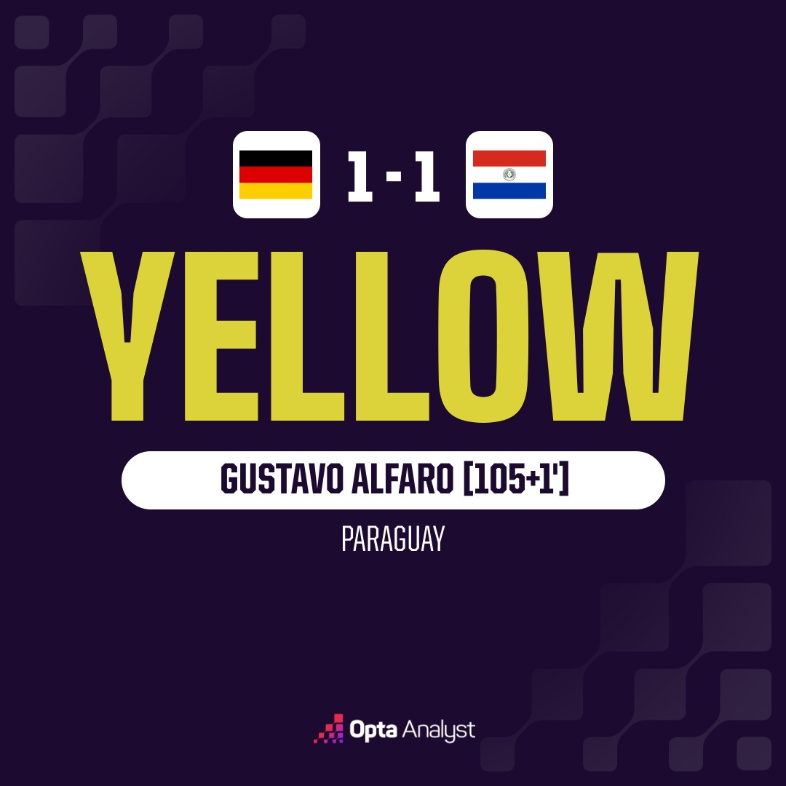
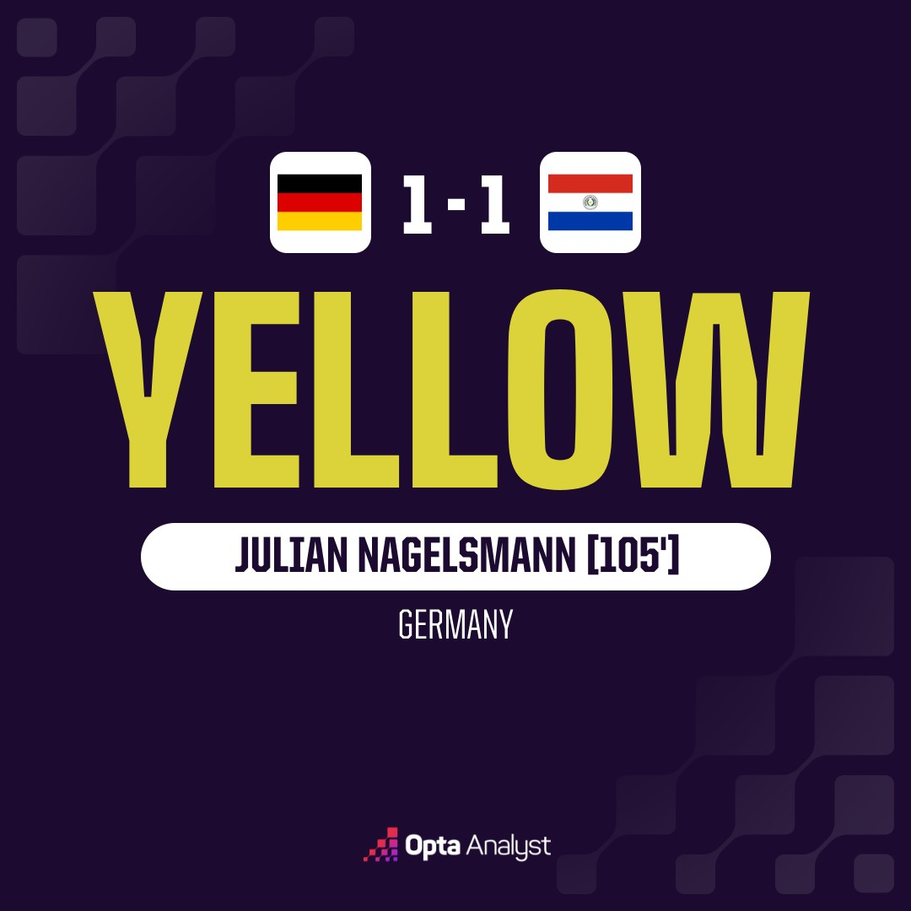
104'
VAR overturns the decision! The video official sees enough reason for the original call to be overturned, and so elects to intervene here.
104'
This decision may not stand, as it is going to VAR. The referee has stopped the play while his video assistant reviews the incident.
102'
A foul from Waldemar Anton on Orlando Gill sees Paraguay win a free-kick, but it is not in a dangerous position, so Germany should be confident they can defend it easily enough.
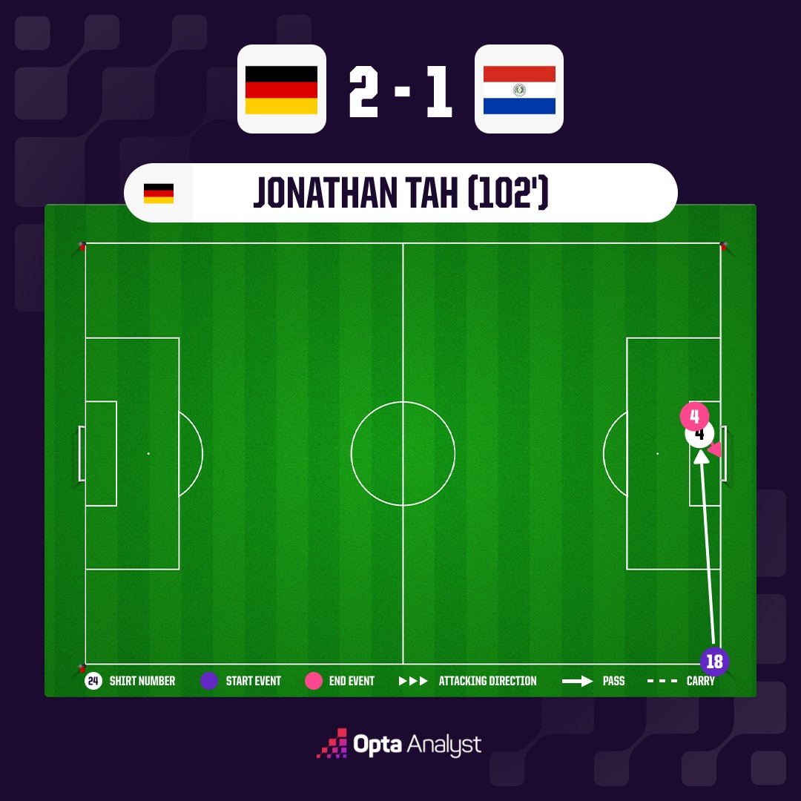
102'
A chance now for Germany to get a good delivery into the box, after the ball is diverted behind for a corner. Germany have been pushing for what would be a key goal, but Paraguay have stood firm so far.
100'
Germany have had plenty of the ball in the last 15 minutes, with 83.78% possession compared to just 16.22 % for their opponents. However, there’s not been any goal to come from that possessional dominance just yet.
99'
A substitution for Paraguay sees Damián Bobadilla replaced by Antonio Sanabria. There does not appear to be any obvious sign of an injury, so that is a tactical switch.
99'
A substitution for Paraguay sees Juan José Cáceres replaced by Braian Ojeda. There does not appear to be any obvious sign of an injury, so that is a tactical switch.
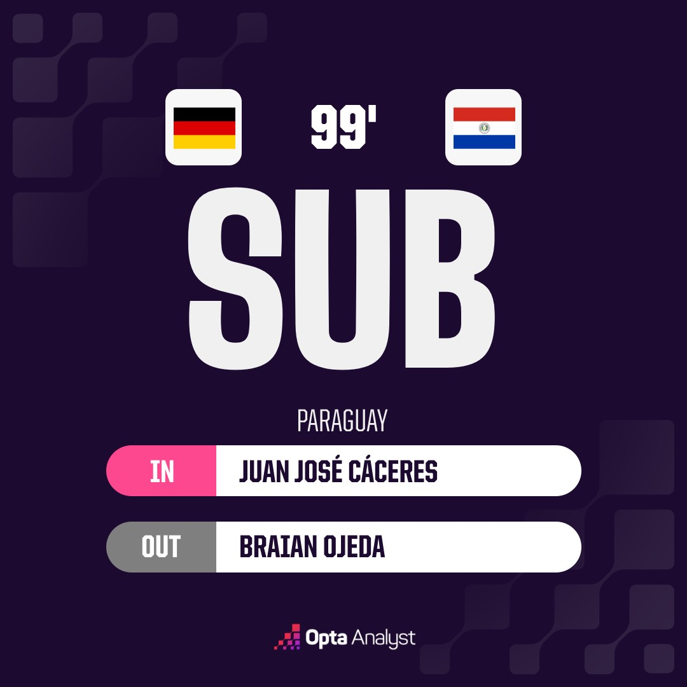
97'
No luck! Nick Woltemade takes on a shot that, had they got it right, might have been set to test the goalkeeper, but instead it is sent off target and Paraguay come away unscathed.
95'
Corner! The ball goes behind and now Germany will aim to deliver a good ball into the penalty area and test that Paraguay defence, which has been frustrating them in recent minutes.
94'
This could be a chance for Germany, after Juan José Cáceres fouls Florian Wirtz, handing them a free-kick in a threatening area. A good set-piece from here could really test the Paraguay defense!
93'
Great block from José Canale, as they get in the way of an attempt from Joshua Kimmich that might have been set to cause the goalkeeper some problems. Solid defending from the Paraguay player.
93'
BLOCKED! That was close. Nick Woltemade got off a shot, which was heading in, but Gustavo Gómez was on hand to make a vital intervention. Great block!
91'
A substitution for Paraguay sees Miguel Almirón replaced by Gustavo Velázquez. There does not appear to be any obvious sign of an injury, so that is a tactical switch.
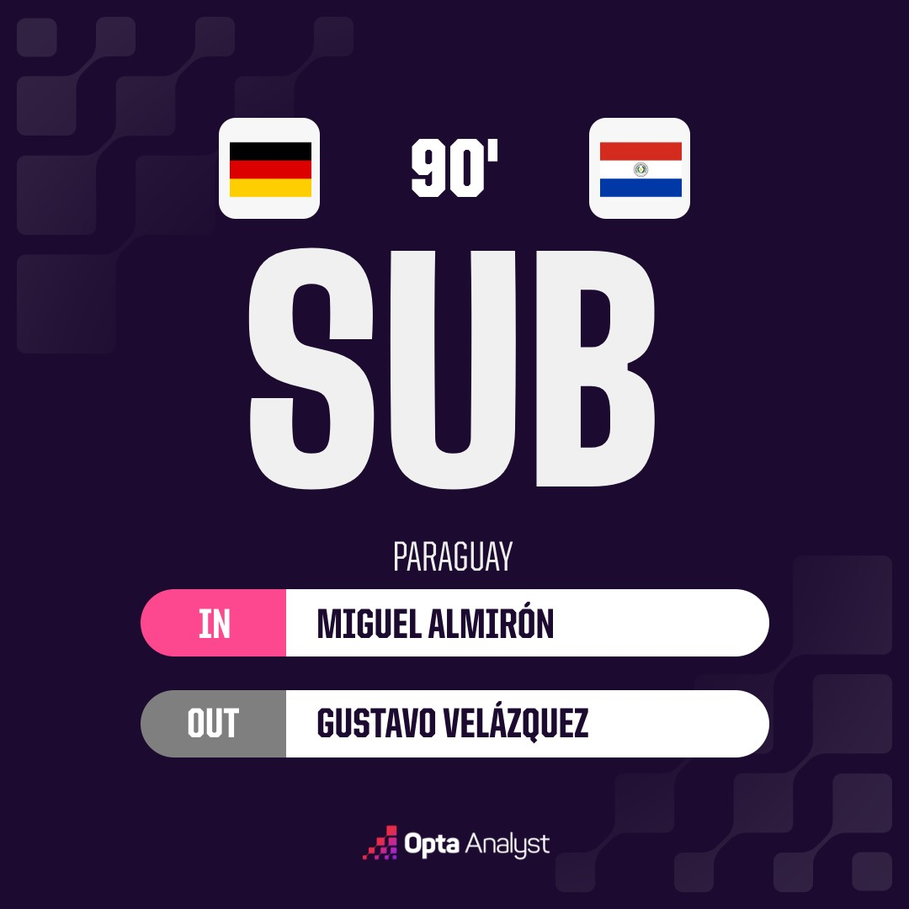
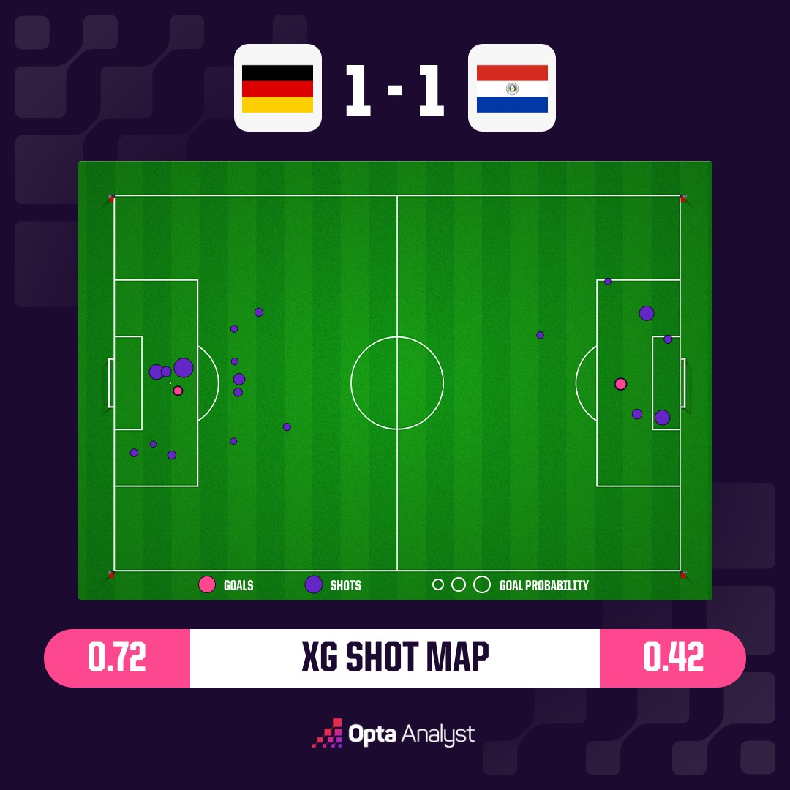
90+5'
Free-kick! A foul from Waldemar Anton on Matías Galarza. It is well away from Germany’s goal, so it is unlikely to result in a chance for Paraguay.
90+3'
A rash challenge from Júnior Alonso, who sends Florian Wirtz tumbling, giving Germany a free-kick. It is not in a threatening position, but it gives them a chance to get back on the ball.
90+3'
Corner now for Paraguay, as they see a shot from Miguel Almirón deflected out of play for a set-piece. Germany have some defending to do, here. Could this result in a big opportunity?
90+2'
Germany have attempted the last 5 shots in this game, Paraguay last shot was taken by Gustavo Gómez in the 70th minute.
90+2'
SHOT! Jonathan Tah manages to get a shot off from inside the area, but although it was heading in, they cannot get enough on it to beat Orlando Gill, who makes the save.
90+1'
Joshua Kimmich's effort is deflected out for a corner. Can Germany make anything of this set-piece?
89'
A free-kick to Paraguay, as Waldemar Anton goes in and fouls Gustavo Caballero. However, Germany will not mind giving one away in this area too much, with plenty of distance to their goal.
88'
The Germany manager is looking to the substitutes’ bench, bringing on Nick Woltemade in place of Leroy Sané. Will the change make a difference? Let’s find out!
86'
A lapse in concentration from Waldemar Anton, as they stray offside and bring to an end what was a promising move for Germany, who are pushing hard for the goal they so desperately want.
86'
That is a disappointing effort from Leon Goretzka, who went for glory but got their attempt wrong, and the shot sailed off target. A frustrating moment for Germany.
84'
In the last 15 minutes, it is Germany who have dominated the ball, having seen 71.92% of the possession, yet they have not been able to go and turn that into a goal just yet, with their opponents standing firm.
80'
Great block from Gustavo Caballero, as they get in the way of an attempt from Florian Wirtz that might have been set to cause the goalkeeper some problems. Solid defending from the Paraguay player.
79'
Germany are making a tactical change. Aleksandar Pavlović is leaving the field and in their place comes Waldemar Anton – we will soon see if this switch has the desired impact.
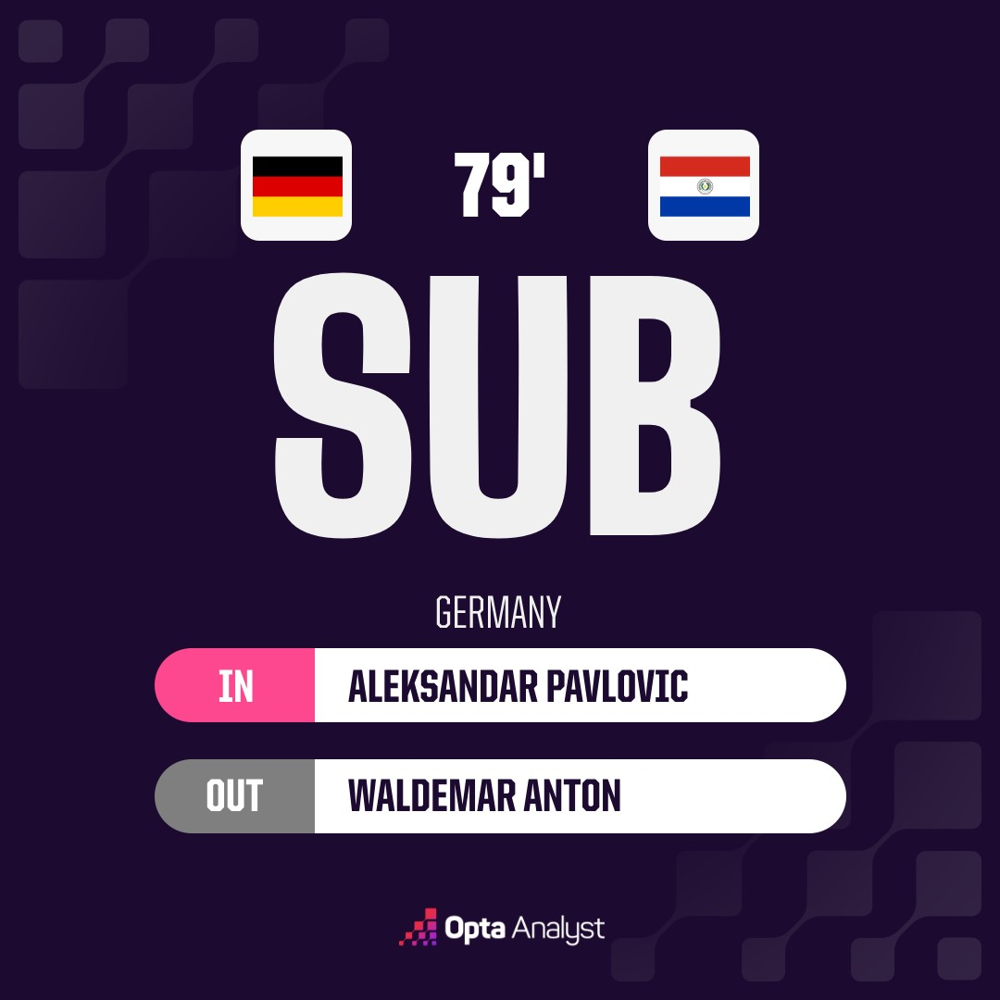
78'
This could be a chance for Germany, after Damián Bobadilla fouls Nathaniel Brown, handing them a free-kick in a threatening area. A good set-piece from here could really test the Paraguay defense!
78'
HUGE CHANCE GOES BEGGING! What a miss that is from Kai Havertz, who looked all set to score a goal that their team need, but instead fails to direct their attempt into the back of the net. That was a big, big opportunity for Germany.
77'
That is offside! Paraguay are pushing for a goal but Gustavo Caballero is a little bit too eager, and just strays offside in the build-up, in what was a promising attacking move.
76'
Entering the final stages of this contest, let’s check on the possession stats for each team. It is Germany who have had the more of the ball, with 77.51%, while Paraguay have had to settle for 22.49%. The score is 1-1.
70'
A free-kick to Germany, as Gustavo Gómez goes in and fouls Manuel Neuer. However, Paraguay will not mind giving one away in this area too much, with plenty of distance to their goal.
70'
No luck! Gustavo Gómez takes on a shot that, had they got it right, might have been set to test the goalkeeper, but instead it is sent off target and Germany come away unscathed.
69'
Germany have had plenty of the ball in the last 15 minutes, with 71.58% possession compared to just 28.42 % for their opponents. However, there’s not been any goal to come from that possessional dominance just yet.
69'
Can Germany survive here? They will have some defending to do after the ball is turned behind for a corner kick. Will Paraguay take this opportunity and grab the goal they have been pushing for?
69'
The deadlock could be about to break. Paraguay with a flurry of set-pieces in dangerous territory.
68'
Foul! A free-kick now in a dangerous area for Paraguay, after Gustavo Caballero is fouled by Jonathan Tah. Can Paraguay make the most of this opportunity?
67'
Free-kick! A foul from Aleksandar Pavlović on Orlando Gill. It is well away from Germany’s goal, so it is unlikely to result in a chance for Paraguay.
67'
Can Paraguay survive here? They will have some defending to do after the ball is turned behind for a corner kick. Will Germany take this opportunity and grab the goal they have been pushing for?
66'
With 25 minutes left to play, it’s a good chance to check in on the shot count. Germany have mustered 9 so far, with 1 of those landing on target. On the other hand, Paraguay have gotten 5 of their 3 of attempts on target.
66'
BLOCK! An intervention from Damián Bobadilla might have just prevented a goal, with the defending player getting in the way of an attempt from Leroy Sané. Solid defending there!
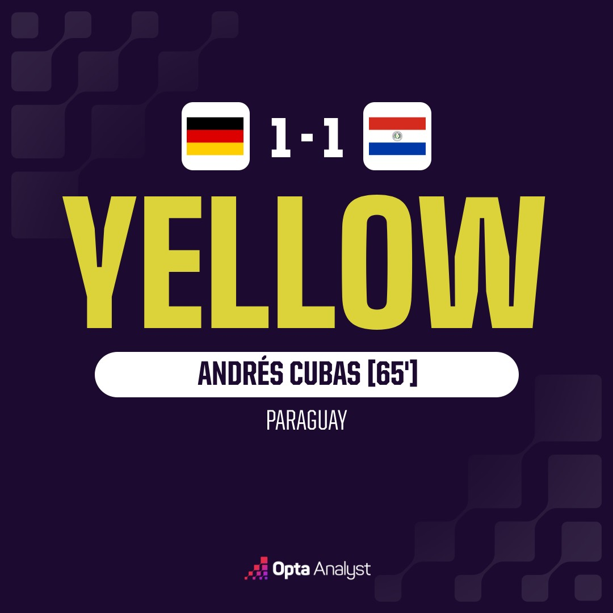
65'
That is a booking for Andrés Cubas, who has received their first yellow card. They are not happy with the decision, but it is done now, and they will have to be careful for the rest of this game.
65'
Foul! A free-kick now in a dangerous area for Germany, after Kai Havertz is fouled by Andrés Cubas. Can Germany make the most of this opportunity?
63'
Substitution! Jamal Musiala replaces Deniz Undav for Germany as the manager shuffles the pack. Can Jamal Musiala make an impression as this match continues?
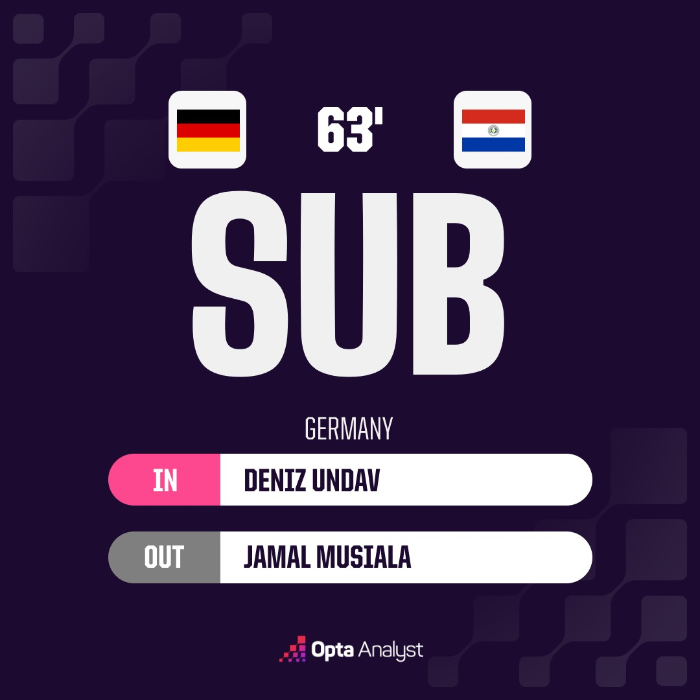
62'
A free-kick to Paraguay, as Nathaniel Brown goes in and fouls Mauricio. However, Germany will not mind giving one away in this area too much, with plenty of distance to their goal.
61'
Foul! A free-kick now in a dangerous area for Germany, after Kai Havertz is fouled by Matías Galarza. Can Germany make the most of this opportunity?
59'
CLOSE! Gustavo Caballero gets into a decent shooting position inside the Germany area, and manages to find space to get an effort off. However, Manuel Neuer is equal to it.
57'
A change for Paraguay, as they are forced into a substitution with Julio Enciso having sustained an injury. Mauricio is coming on for Paraguay now.
56'
That might have been going in! A fantastic block from Andrés Cubas, who gets in the way of a goal-bound effort from Aleksandar Pavlović. Would the goalkeeper have been beaten? We will never know.
56'
That might have been going in! A fantastic block from José Canale, who gets in the way of a goal-bound effort from Leon Goretzka. Would the goalkeeper have been beaten? We will never know.
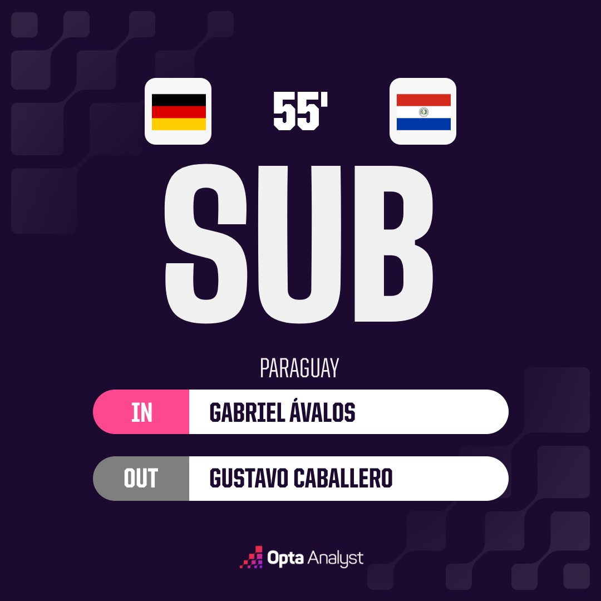
55'
Gabriel Ávalos’s match is over as Paraguay decide to make a substitution. Gustavo Caballero enters the field in what looks like a tactical change.
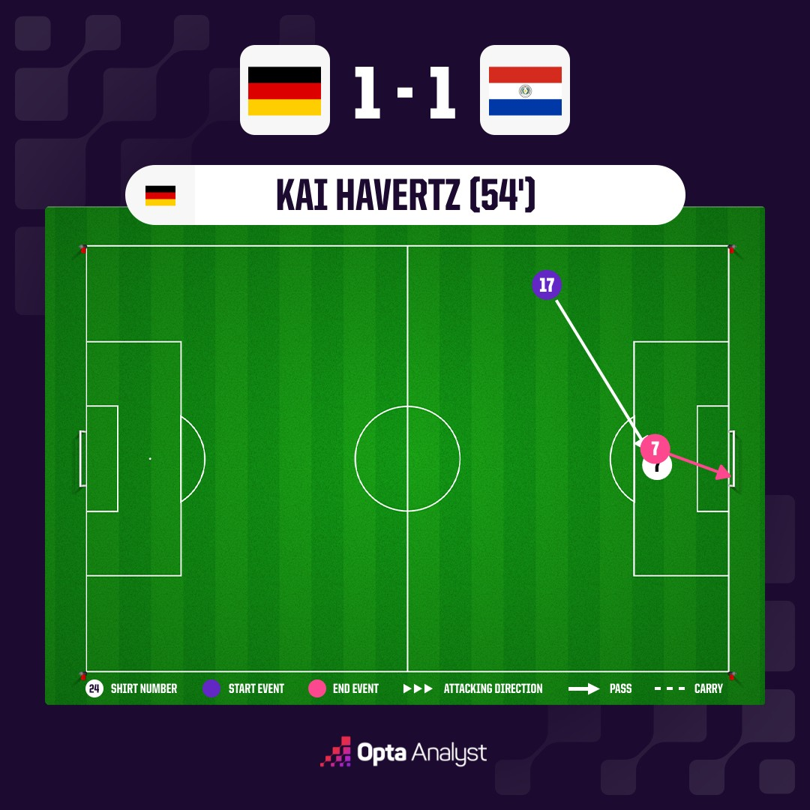
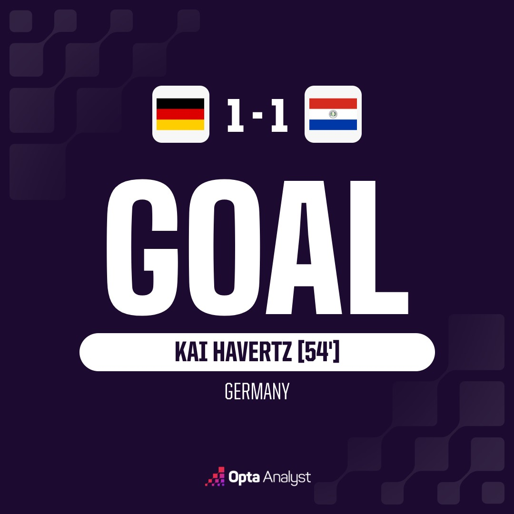
54'
Florian Wirtz has assisted his third goal in the 2026 FIFA World Cup.
54'
GOAL! Kai Havertz scores from inside the penalty area and it’s all level between Germany and Paraguay. All to play for now, can either side go on and find a winner?
54'
Kai Havertz has scored his fifth goal in the FIFA World Cup.
50'
What a miss! That is a bad finish from Julio Enciso, who has been unable to convert from a good opportunity, seeing a big chance for Paraguay to extend their lead go begging. Will Germany make them pay for that profligacy?
49'
No luck – it’s offside! Florian Wirtz looked to dart in behind and get on the end of a pass, yet they just went too early, and the flag is up to signal offside.
47'
Despite trailing, Germany are showing real defensive grit, digging in and stopping further damage as they try to build a platform.
46'
The Germany manager is looking to the substitutes’ bench, bringing on Leon Goretzka in place of Felix Nmecha. Will the change make a difference? Let’s find out!
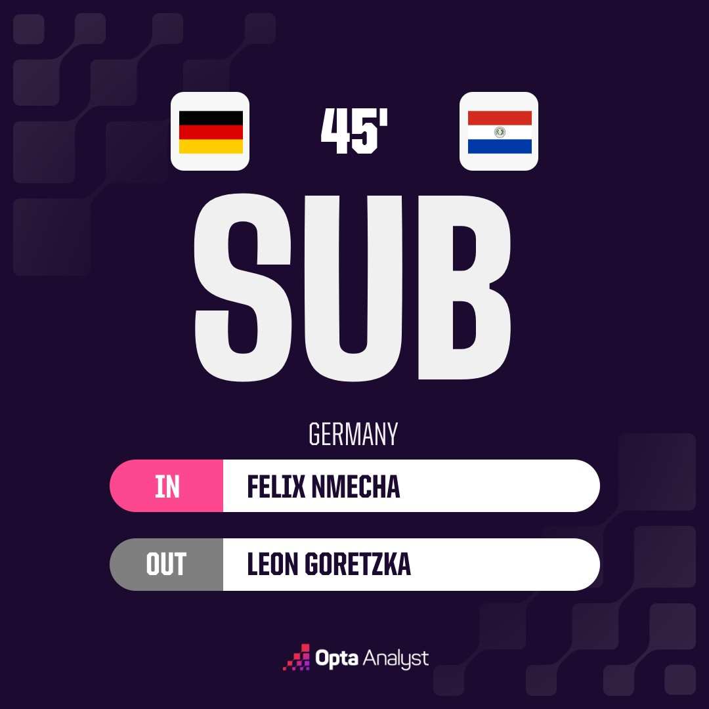
52'
Paraguay are unbeaten in their last 4 FIFA World Cup matches when leading at half-time (W3, D1) dating back to 7th June 2002 against Spain (L1-3).
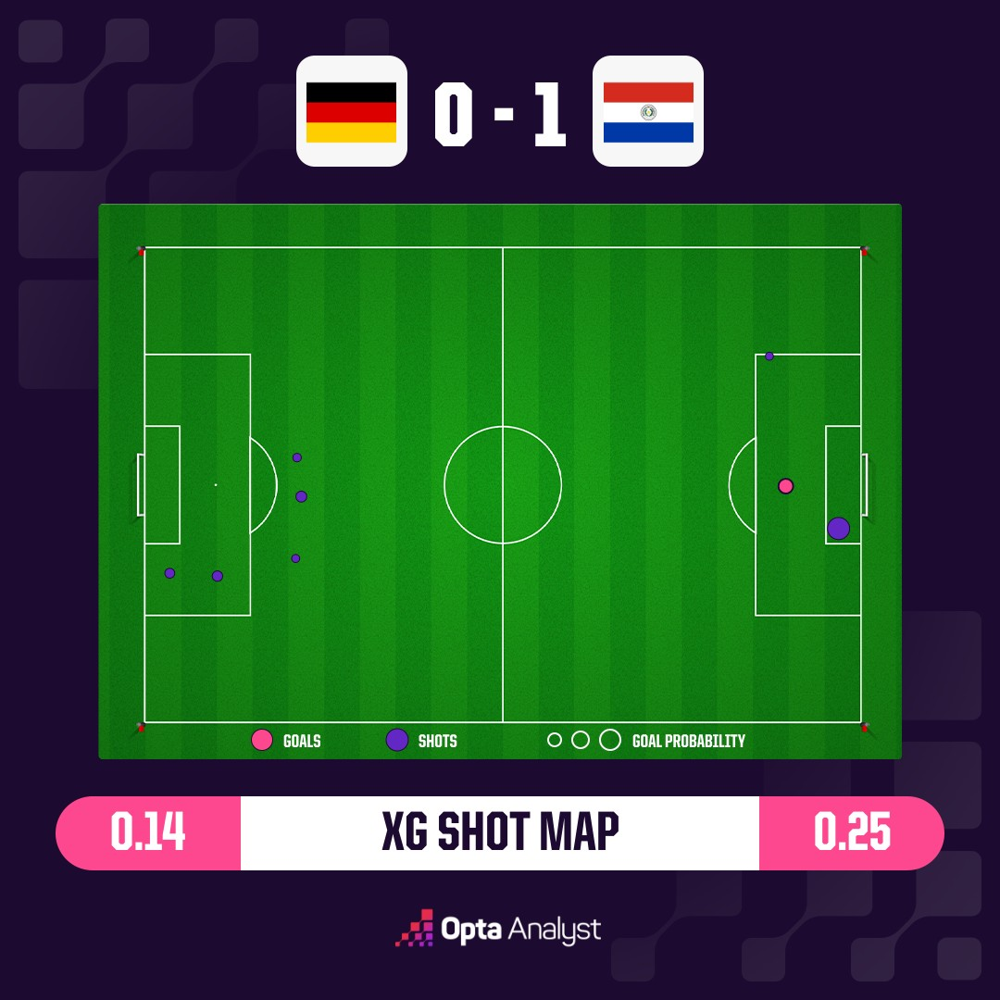
45+6'
HALF-TIME: Germany 0-1 Paraguay. An intriguing first half comes to a close with Paraguay going in ahead at the interval here at Boston Stadium.
45+4'
Corner! The ball goes behind and now Germany will aim to deliver a good ball into the penalty area and test that Paraguay defence, which has been frustrating them in recent minutes.
45+4'
Excellent defensive work from Paraguay; their organization and success in key duels are effectively safeguarding their lead.
45+3'
The Paraguay defence steps up in time and there is a frustration for Kai Havertz, who thought they were through until the flag goes up to signal offside.
45+3'
That is a disappointing effort from Joshua Kimmich, who went for glory but got their attempt wrong, and the shot sailed off target. A frustrating moment for Germany.
45+2'
A chance now for Germany to get a good delivery into the box, after the ball is diverted behind for a corner. Germany have been pushing for what would be a key goal, but Paraguay have stood firm so far.
45+1'
It is a corner now to Germany, with Paraguay somewhat hanging on here as they look to hold out for a positive result. Can Germany make something of this set-piece opportunity?
45+1'
No luck! Joshua Kimmich takes on a shot that, had they got it right, might have been set to test the goalkeeper, but instead it is sent off target and Paraguay come away unscathed.
44'
Great defending from Paraguay, who are staying organised and winning key battles to preserve their lead.
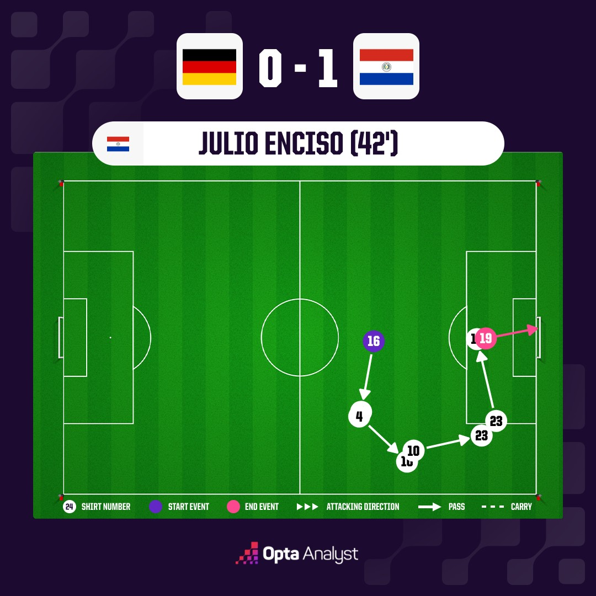
42'
Matías Galarza has assisted his first goal in the 2026 FIFA World Cup.
42'
Paraguay have avoided defeat in their last 4 matches when scoring first in the FIFA World Cup, since a 1-3 loss to Spain on 7th June 2002.
42'
Julio Enciso has scored his first goal in the 2026 FIFA World Cup.
42'
GOAL! Paraguay have scored and it is Julio Enciso who has put them in the lead! Julio Enciso applies the finish and while that is not game over for Germany, they have plenty of work to do now! We will see if that strike proves to be the winner!
41'
Corner! The ball goes behind and now Paraguay will aim to deliver a good ball into the penalty area and test that Germany defence, which has been frustrating them in recent minutes.
41'
Germany have not had a shot on target so far in this game.
37'
A rash challenge from Aleksandar Pavlović, who sends Matías Galarza tumbling, giving Paraguay a free-kick. It is not in a threatening position, but it gives them a chance to get back on the ball.
35'
A free-kick to Paraguay, as Felix Nmecha goes in and fouls Miguel Almirón. However, Germany will not mind giving one away in this area too much, with plenty of distance to their goal.
33'
In the last 15 minutes, it is Germany who have dominated the ball, having seen 83.55% of the possession, yet they have not been able to go and turn that into a goal just yet, with their opponents standing firm.
33'
BLOCKED! That was close. Kai Havertz got off a shot, which was heading in, but Juan José Cáceres was on hand to make a vital intervention. Great block!
32'
It has been 30 minutes since Paraguay last attempted a shot in this game.
31'
Free-kick! A foul from Deniz Undav on José Canale. It is well away from Germany’s goal, so it is unlikely to result in a chance for Paraguay.
29'
The Paraguay defence steps up in time and there is a frustration for Leroy Sané, who thought they were through until the flag goes up to signal offside.
28'
A lull in this match, as the teams prob and probe, but without much success. It has been 10 minutes since there was an attempt from either side, though Germany are seeing more of the ball, with 83 per cent possession to Paraguay’s 17 per cent during that time.
23'
A rash challenge from Jonathan Tah, who sends Gabriel Ávalos tumbling, giving Paraguay a free-kick. It is not in a threatening position, but it gives them a chance to get back on the ball.
23'
There is plenty of possession for Germany, with 83.87% compared to Paraguay’s 16.13% in the last 15 minutes. However, Germany have not been able to turn that dominance of the ball into a goal or even a shot during the period – which will be a huge frustration for their coach.
22'
A rash challenge from Matías Galarza, who sends Joshua Kimmich tumbling, giving Germany a free-kick. It is not in a threatening position, but it gives them a chance to get back on the ball.
21'
Nathaniel Brown goes in on Miguel Almirón and concedes a foul. The free-kick is not in a particularly dangerous area from Germany’s viewpoint, though.
18'
Neither team has had a shot in the past 10 minutes, as this match just enters something of a down period. Germany have seen more of the ball, with 83 per cent possession, but Paraguay are keeping them away from goal. There is still a chance the match will spark into life, though.
16'
Germany are having plenty of the ball, with 79.17% possession in the last 15 minutes. However, they have been unable to transfer that possessional dominance into a goal during that period.
15'
Free-kick! A foul from Aleksandar Pavlović on Orlando Gill. It is well away from Germany’s goal, so it is unlikely to result in a chance for Paraguay.
14'
It is a corner now to Germany, with Paraguay somewhat hanging on here as they look to hold out for a positive result. Can Germany make something of this set-piece opportunity?
11'
Can Germany make this chance count? They have won a free-kick in a threatening position after a foul from Julio Enciso on Joshua Kimmich. Will Paraguay's defence be tested here?
10'
A foul from Aleksandar Pavlović on Miguel Almirón sees Paraguay win a free-kick, but it is not in a dangerous position, so Germany should be confident they can defend it easily enough.
8'
MISS! A shot from Florian Wirtz ends up being off target. They might have done a bit better with that one, but it remains Germany 0-0 Paraguay.
7'
It’s been tight so far, and Paraguay are making sure it stays that way with strong defensive discipline and well-timed clearances.
6'
That is a disappointing effort from Deniz Undav, who went for glory but got their attempt wrong, and the shot sailed off target. A frustrating moment for Germany.
3'
Kai Havertz goes in on Andrés Cubas and concedes a foul. The free-kick is not in a particularly dangerous area from Germany’s viewpoint, though.
2'
What a miss! That was a huge chance for Júnior Alonso, but they have failed to convert. What an opportunity that was for Paraguay.
1'
Corner now for Paraguay, as they see a shot from Julio Enciso deflected out of play for a set-piece. Germany have some defending to do, here. Could this result in a big opportunity?
1'
KICK-OFF! And here we go! We are up and running in this clash between Paraguay and Germany at Boston Stadium. Stay tuned for all the action as it happens!
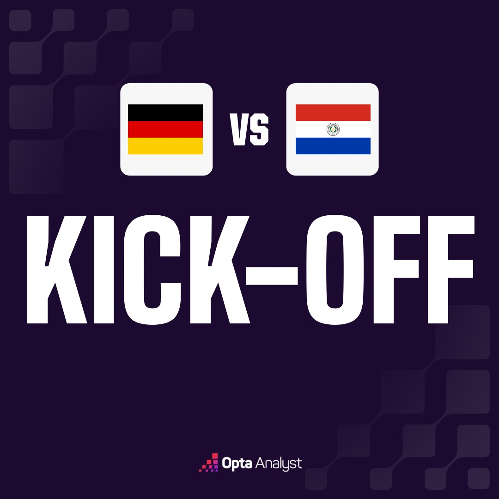
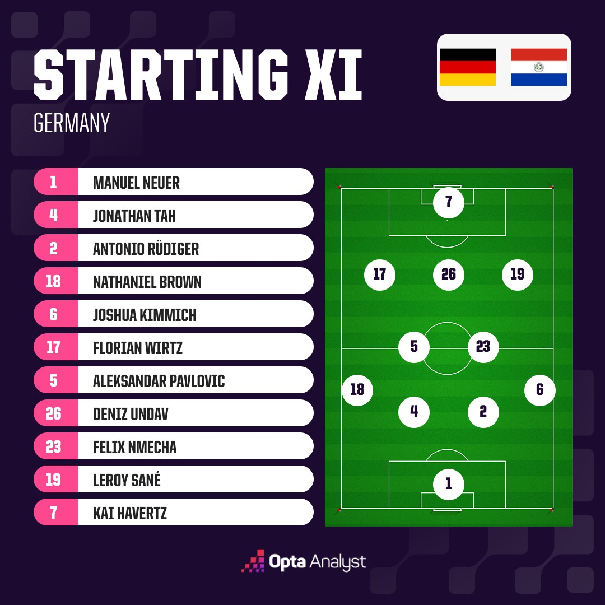
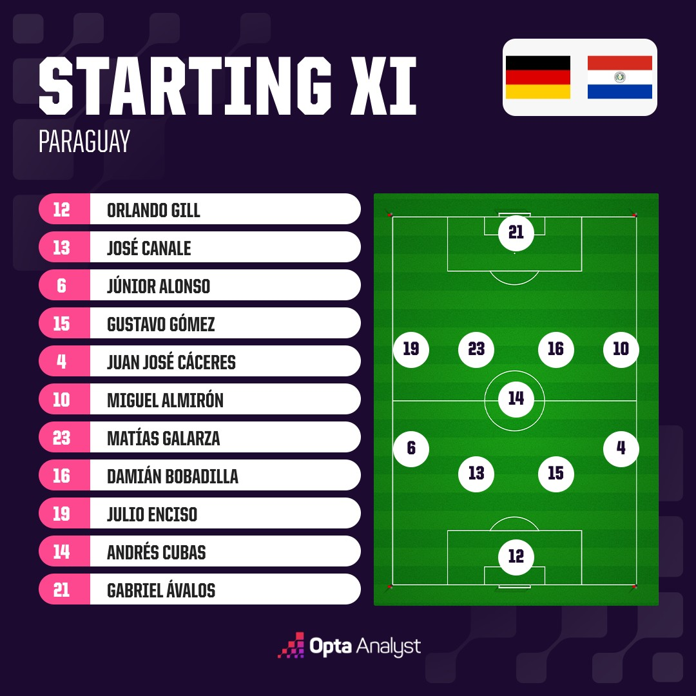
Manuel Neuer is making his 23rd appearance in the FIFA World Cup.
Germany have won their last 2 games at home when D. Undav has scored
There have been 3 or more goals scored in each of Germany's last 4 games
Germany have won their last 2 games when D. Undav has scored
There have been 3 or more goals scored in total in each of Germany's last 5 home games
Germany take on Paraguay on Monday for a FIFA World Cup Round of 32 clash at Boston Stadium.
Germany slumped to their first defeat in the competition this season, losing 2-1 against Ecuador in their last group stage match on June 25. Leroy Sané was the sole player on the scoresheet in the loss. In seven games this year, they have six wins and one loss.
Paraguay played out a 0-0 draw against Australia in their last game, a June 25 group stage clash at San Francisco Bay Area Stadium. In 2026, they have won three, drawn one, and lost two.
Germany finished first in their group on six points, while Paraguay's four points placed them third.
Deniz Undav has caught the eye for Germany in World Cup play. He leads the team with three goals. Paraguay's leading players going forward have been Matías Galarza and Mauricio, who have each netted once in this World Cup campaign.
The German side have scored in each of their three World Cup contests this season.
In their last six matches in all competitions, Germany have won five and lost one. The German side scored 18 and conceded six over that stretch, scoring first in five of the six contests. They had seven first-half goals, while their opponents netted four times in the first 45 minutes. The Paraguayan side have won three, drawn one and lost two in their last six. The Paraguayan side scored eight and conceded six in that period, netting first in three of the six. They had three goals in the first half, while their opponents netted three times before the break.
-
General
Possession 75.6% 75.58624.41424.4% Possession lost in defensive half 14 148888 Possession lost in middle third 42 423434 Duels 139 139139139 Duels success rate 43.2% 43.16554.67654.7% Aerial duels 40 404040 Aerial duels won 52.5% 52.547.547.5% Successful dribbles 15 1588 Fouls won 12 121818 Offsides 4 411 Corner awarded 16 1666 -
Distribution
Passes 805 805255255 Long passes 40 407878 Long passes proportion (%) 5.0% 4.96930.58830.6% Passing accuracy 90.1% 90.06262.74562.7% Passes in opponents' half 592 592141141 Passing accuracy in opponents' half (%) 88.2% 88.17653.90153.9% Total passes in the final third 315 3158484 Passing accuracy in final third (%) 81.0% 80.95247.61947.6% Forward passes 492 492174174 Forward passes (%) 61.1% 61.11868.23568.2% Through balls 1 100 Final third entries 127 1275656 Penalty area entries 77 772525 Total open play crosses 38 381313 Crosses 55 552121 Crossing accuracy 16.4% 16.36428.57128.6% -
Attack
Goals 1 451 Shots 21 27137 Shots on target 6 1183 Blocked shots 8 822 Headed shots 6 633 Shots outside the box 10 1011 Shots inside the box 11 17126 Shots accuracy excluding blocked shots 46.2% 57.89572.72760.0% Shooting accuracy 28.6% 40.74161.53842.9% Key Passes 10 1055 -
Defence
Tackles 13 133333 Tackles success rate 53.8% 53.84660.60660.6% Clearances 23 235555 Interceptions 4 41313 Recoveries 77 776262 Attacking third recovery 10 1033 Defensive third recovery 37 374848 Midfield third recovery 30 301111 Recoveries in attacking half (%) 13.0% 12.9874.8394.8% -
Discipline
Fouls conceded 18 181212 Yellow cards 2 222 Red cards 0 000